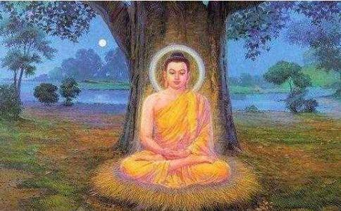

久远之前有一金色城市，国王名为云顶，育有一非常俊美之太子。此具
后来在吉祥山中，某次春光无限、山美水秀之时，云驰到山中赏玩，忽遇一美艳绝伦之女人正在一金殿内供养一尊郭玛天女像，此像纯由珍宝制成。美女边供养边弹拨
云驰越看越对美女生大
不曾想就在此时，国王派人传语美女玛拉雅见道：“你兄长正与云顶商议欲将你嫁人，请火速回家。”美女万不得已只得快快而返，但心中却未曾片刻割舍对太子云驰之爱恋。云驰心中亦明了美女对自己之情感，他一边对玛拉雅见贪执不舍，一边无奈归家，脑海中一直呈现美女面容，自是难舍情缘。
云驰朋友问他何故如此伤心，他难过答言：“我刚刚见到玛拉雅见美女，对她立刻就生出无穷欢心爱意，故而心境才不由自主变成这般境地。”云驰就将前后经过详细向朋友坦言。正在云驰身心备受煎熬之时，非天适时出现并告诉他说：“你根本不用担心，你之焦虑纯属多余。美女你自会得到，因你父亲索要玛拉雅见不为别人，恰恰就是要将她许配与你，明日你即会实现自己愿望。”非天如是安慰云驰后，云驰高兴难抑地于黄昏时分归家稳坐。
玛拉雅见一直心神不定，尽管天上有皎洁之月，宫殿中不时飘来袭袭水莲花香，但她无论如何也无法安眠，心中一直挂念着云驰，以致夜不成寐，这一晚竟似百年那么长久、难熬。第二日晨，当阳光普照大地之时，玛拉雅见也开始准备婚宴事宜，她用种种装饰细致打扮自己。而世人尊重之云驰太子则在数百位持明者眷属簇拥下来到举行婚宴之吉祥地，玛拉雅见也在手持拂尘之众人护送下来到此处。两人按当地风俗行盛大婚礼，并互相牵手举行仪式。亲朋好友在宴会上载歌载舞，尽享欢乐，并行供养、布施等善举，喜庆盛宴即如是连开六天。
第七日，云驰独自一人进山，不期然却发现龙母与龙子正在那里哭泣。云驰忙问二龙伤心原因，龙母悲戚说道：“这是护贝龙王之子螺顶龙子，我们龙辈历来都要按顺序轮流被大鹏残食，如今恰好轮到螺顶。被大鹏吃掉之龙骨遗骸堆积如山王，每轮到众龙被大鹏啄食时，我们都要为其换上红色衣服，然后再将之送至丧身之地。奈何螺顶被吃后，我们这支龙种姓便要彻底绝迹，所以我才与螺顶龙子放声痛哭。”
云驰听罢自然生起难忍之强烈悲心，他心下忖度道：如龙子被大鹏吃掉，龙母又该如何生存？我一定要用生命护卫好龙子。想到这里，云驰就对二龙说：“你们母子可安然回去，我来替螺顶赴死，你们将红衣交与我就是。”龙母连忙说：“这太不应理，你乃具功德之人，所具功德早已远胜螺顶龙子。具大功德者乃为一切众生依怙处，唯愿你吉祥
尽管龙母如是劝阻，但云驰已经发心，他愿为众生受苦之强烈发心任谁也无法阻止。龙子也在此时劝说道：“我本该被大鹏啄食，再要
云驰为保护它也相跟前往，并再三向龙子索要红布，但龙子均未理睬。正在云驰不知如何是好之时，却见王宫内之内臣手捧红布前来给太子顶礼，并请求太子能尽快回去准备参加第七日沐浴仪式。云驰收下红布后说：“你们先行回去，我随后就到。”云驰得到红布后非常高兴，心想这下总算可以如愿以偿。他急忙赶赴大鹏屠龙所用之鲜血淋漓之石头上安坐不动，又将红布盖在自己身体之上静等大鹏到来。大鹏飞来后就径直以金刚利爪伤害他身躯，云驰则凭大悲心身不动摇、心不后悔。大鹏对此感到万分惊奇，此种现象实在稀有难得，它不知道此回受难之龙到底是何方神圣。
大鹏一边想一边啄下云驰顶上宝珠，云驰顷刻就已是鲜血沾满全身。此时云顶大王与妻子等都向
云顶则安慰妻子、儿媳道：“此乃大鹏撕扯龙子顶上宝珠，此宝珠是否为云驰所有尚不清楚。”
待王妃、儿媳醒来后便与云顶国王奔到大鹏屠龙之石边，而龙子螺顶也在此时身着红衣、从海边顶礼完郭嘎那神像后赶至此处。它一眼就看见云驰正被大鹏损害，龙子不觉边哭边倒地昏厥。待它醒来后，龙子悲伤感叹道：“你为众生怙主，为何要为我这般业力深重之人遭受如此折磨、损害？”龙子随后又向云顶讲述了整个事件经过，并再次感慨自己业力却要带累云驰承受之内疚。龙子又怒斥大鹏说：“你这大鹏为何也不仔细观察？如此轻率就胡乱啄食一气？他像不像你平日所食之龙？你为何要杀害持明者？像你这样不经观察即行恶业也实属罕见。”
玛拉雅见听闻、亲见云驰所受如是悲惨遭遇后，不觉再次昏厥过去。当她醒来后看到丈夫变成如此模样，伤心欲绝地抱着云驰身体又是几度昏厥。大鹏听到众人各种悲哀痛苦之倾诉后，自己终于也生起愧疚之意，心中不时感受阵阵痛苦、悲伤情绪。父母眼见爱子似乎活不长久，便愤愤不平对云驰说道：“你以慈悲心为杀害我们之众生做下这等粗糙、不审慎思索之事到底有何意义？你不保护自己、舍弃性命又有何等作用？对你那能遣除众生贫苦之身躯，你为何不知自我保护？”
云驰以微弱音声恭敬回答说：“我虽未经父母开许，但我为利他众而舍弃不稳固之有漏身躯只为能获稳固果位，我现在以恭敬心对二老作顶礼。”大鹏闻言后悔不迭，它开始谴责自己过失。云驰也趁机要求它自此以后再勿残害诸龙，并要它当众发下誓愿。
之后，云驰因受伤过重已不能开口讲话，呼吸愈发短促。众人见他已生命垂危，云顶就与螺顶开始做火化准备。玛拉雅见则想到：火化丈夫之时，我自己亦要跃入火海。她边打定主意边对自己供奉之天尊郭玛祈请道：“我经常供奉之天女，如你有能力，请保佑我能真正拥有我丈夫。我们成婚只有七天，难道你忍心看我七天后就成寡妇？看来你平日所允诺均为虚假不实。我生生世世都愿能得到云驰！”玛拉雅见边发愿，边将手中曼达鲜花扔进火中。
郭玛天女不大功夫即手捧
螺顶龙子则一直注目坐于自己面前之救命恩人，他满怀欢喜、无有厌烦地长时间观望大悲尊者云驰太子，
久远之前，
大力魔王后以脖颈上拴挂狗尸之形象回到魔境，结果却发现天女、天子等人都在享受安乐，大力立即心生妒意、满心不高兴。九十九万天女此时也觉察到魔王不悦表情，她们全都对他生出悲心，且议论道：“魔王一直危害众生，自己也心烦意乱、心态不稳定，更不明
勇势菩萨立即以神变于魔王上方幻化出一远胜大力所统辖魔国之新魔域，此魔境庄严善妙，俨然一崭新世界，勇势又于此魔界旁再幻化出一世界，并令魔界众生全部被此世界众生降伏，包括魔王及众魔尽皆毁灭无余。大力魔王眼见如此衰败景象不由伤心想到：看来我在魔国已不可能久呆，于世间生存之日也屈指可数，我肯定会离开魔域。大力想及此等黯淡前景不由心生厌离，同时也深感不悦，他以恐惧心告诉勇势菩萨说：“请你救度我，我忏悔己过。”勇势则对他开示道：“‘好友’你勿造违缘，还应摧毁傲慢心。”
如是开导一番后，勇势又为大力魔王宣说佛法，魔王生起欢喜心后终于皈依